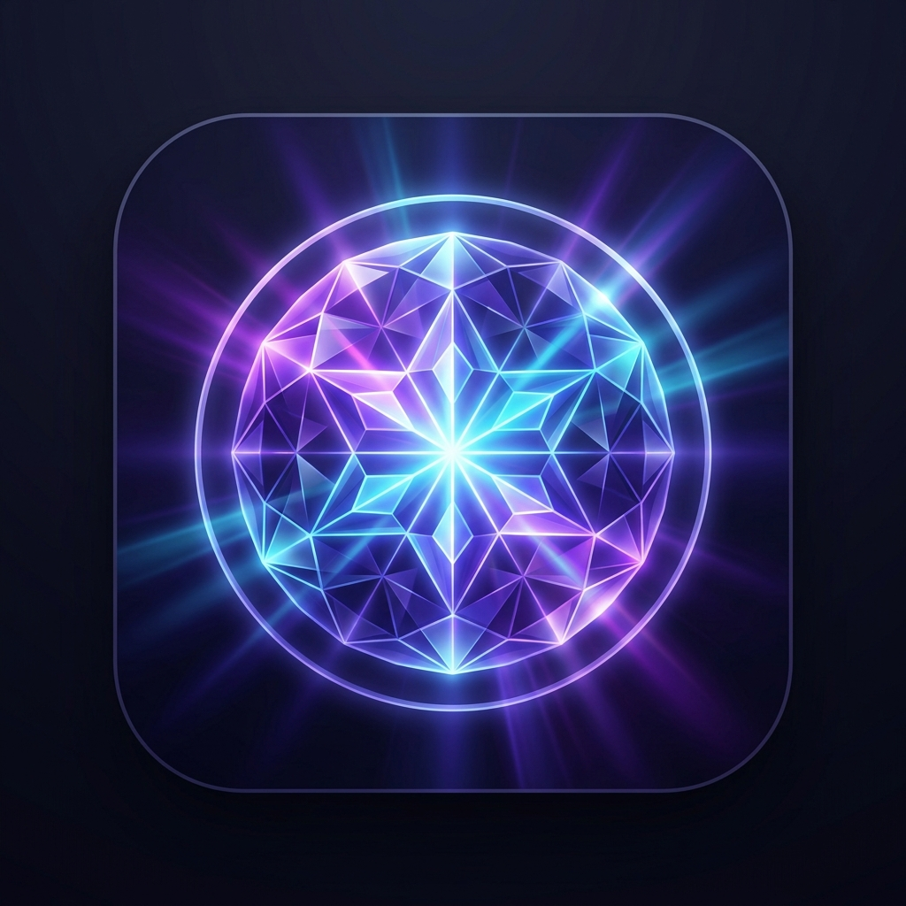

Zero cold-start lag, pinned VRAM residence, and native hardware telemetry.
Select the speech persona used for spoken replies in Gemini Live voice mode.
Optional security token for authenticated LAN/Tailscale deployments (matches LUMINA_AUTH_TOKEN).
Preferred model loaded automatically when opening Lumina.
Sets the behavioral persona and system instructions for the AI.
Accepts standard Ollama tags (e.g. qwen2.5:14b) or Hugging Face GGUF identifiers (e.g. hf.co/bartowski/Qwen2.5-14B-Instruct-GGUF:Q5_K_M).
qwen2.5:14b
hf.co/bartowski/Qwen2.5-14B-Instruct-GGUF:Q5_K_M